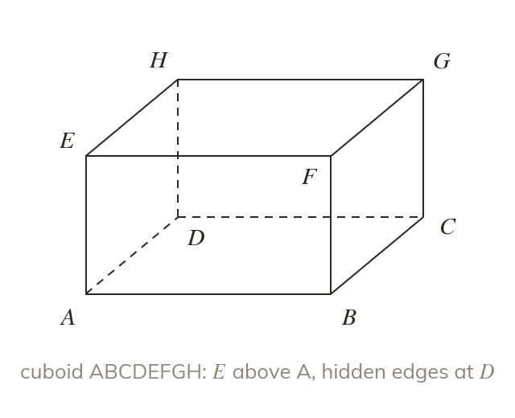
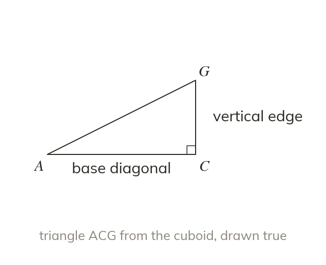
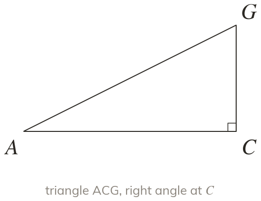
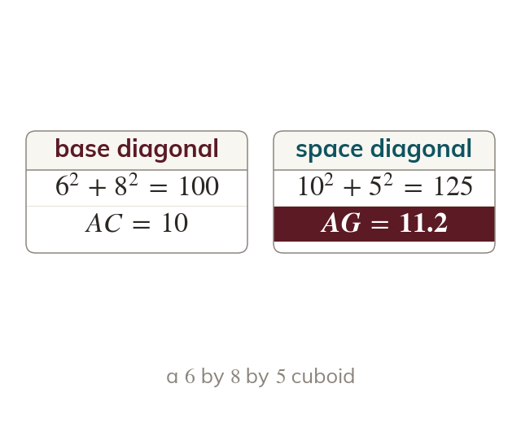
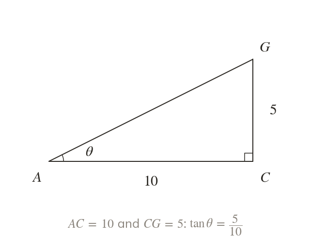

Drawing a solid
Vertical edges are drawn vertical. Hidden edges are drawn dotted.
A 3D problem is a 2D problem in disguise. Pick the right triangle out of the solid, draw it flat, and the trigonometry you already know does the rest.
Work down the page at your own pace. Write every answer in your book first, then click to check it.
Read each card, then follow the worked examples one step at a time.

Vertical edges are drawn vertical. Hidden edges are drawn dotted.

A 3D drawing distorts angles. A separate sketch of one triangle shows its true shape.

Pick an answer. If it's wrong, the feedback tells you which mistake it was.
Section Problems in three dimensions : the drawing conventions and true-shape diagrams. The section has no exercise of its own: its practice is Exercise 7E, in section
Read each card, then follow the worked examples one step at a time.

A space diagonal needs a face diagonal first. Two uses of Pythagoras give

An angle in 3D is found inside one right-angled triangle. That triangle needs two known sides first.
Pick an answer. If it's wrong, the feedback tells you which mistake it was.
Exercise 7E : the cuboid and pyramid questions that find lengths with Pythagoras and angles with right-angled trigonometry.
Finished? Next lesson: 7.6 Lines and Planes in Three Dimensions.
Log in, then search for a code to practise that skill.